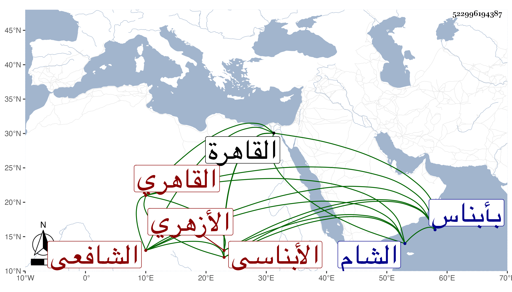

0902Sakhawi.DawLamic.ITO20230111-ara1.EIS1600.522996194387
Biography ID: 522996194387
511
عطية بن إبراهيم بن محمد بن حسن بن نصر بن شمخ بن كليب الأبناسي ثم القاهري الأزهري الشافعي . ولد سنة خمسين وثمانمائة تقريبا بأبناس وحفظ بها القرآن ثم تحول في سنة ست وستين إلى القاهرة فقطنها عند بلديه الزين عبد الرحيم وحفظ الشاطبية والبهجة والمنهاج الأصلي وألفية ابن مالك والتلخيص وعرض على البلقيني والمناوي والعز الحنبلي والأمين الأقصرائي والمحب بن الشحنة وكنت ممن عرض علي قط ولازم بلديه في فنون وكذا أخذ عن البدر ابن خطيب الفخرية بل أخذ عن شيخهما التقي الحصني وصحب ابن أخت الشيخ مدين تبعا لبلديه وصار داعية لابن عربي مع نقصه في الفقه وغيره من العلوم النافعة في صرف كثير من التلبيسات وربما أقرأ بعض الطلبة في المنطق ونحوه بل كان يطلع للمتوكل على الله العز بن عبد العزيز يومين في الأسبوع لذلك ، وحج مع شيخه ودخل الشام وغيرها وليس بمحمود عندي وقد سمعت من شيخه تقبيحه وتوهين أمره غير مرة وفقه الله .
